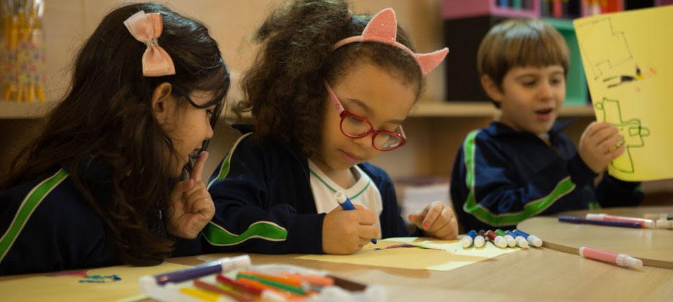
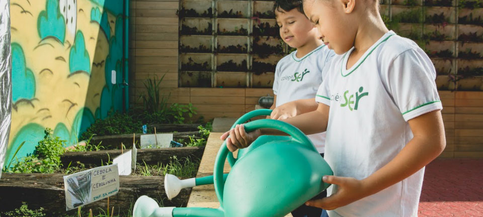

.jpg)
Projetos Educacionais
Projeto Leitura
No Colégio Ser, implantamos o PROJETO LEITURA desde a Educação Infantil até o Ensino Médio, por meio de projetos específicos para cada faixa etária. O objetivo de um projeto de leitura para a educação infantil é o de despertar, desde cedo, o gosto e o prazer pela leitura. Ler amplia o vocabulário, desperta a imaginação e a criatividade, além de ser fundamental no processo de alfabetização. As rodas de leitura são diárias em sala de aula. Através da disponibilização de livros, narrações e até teatro de fantoches, as crianças são apresentadas às mais diversas histórias que auxiliam na construção de novos paradigmas para o universo infantil. Essas atividades são muito importantes para estimular a oralidade dos alunos, interpretação das histórias e a participação. Temos também o projeto Biblioteca Viajante que tem como objetivo despertar o gosto pela leitura, bem como permitir que o aluno vivencie um mundo de fantasia e imaginação em um momento agradável de interação com a sua família. Semanalmente, os alunos escolhem um livro infantil e, juntamente com ele, levam para casa uma ficha de leitura. Com o auxílio da família, leem o livro e registram, na ficha, suas impressões.

Desenvolver a proatividade e a criatividade, e estimular o “pensamento fora da caixa” são alguns dos objetivos principais da Sala de Aprendizagem Criativa. Através deste projeto, os alunos vivenciam histórias e situações cotidianas nos chamados “micromundos”, com a finalidades de resolver situações – problemas que aparecem ao longo das histórias. Dessa forma, eles são estimulados a trabalhar em grupo, criar sinergia, desenvolver a escuta empática, se colocar no lugar do outro, para juntos encontrarem soluções diferenciadas e criativas! Após realizarem o planejamento, os alunos colocam a mão na massa para construir soluções com o uso de materiais recicláveis. Para finalizar o projeto, eles apresentam suas construções para toda a turma e compartilham o conhecimento vivenciado! É um projeto inovador e que de forma simples e lúdica propicia o desenvolvimento de habilidades e competências tão importantes para o século XXI.
.jpg)
A Sala de Tecnologia, tem o objetivo de atuar como parceira na educação, deixando esse processo mais moderno e inovador, tornando os materiais didáticos mais atraentes para os alunos e estimulando o aprendizado. As ferramentas de tecnologia são hoje, instrumentos que tornam a aprendizagem mais interessante e lúdica. Através de jogos a criança cria, desenvolve raciocínio lógico e até participa de momentos que vão auxiliar no processo de alfabetização. A sala de tecnologia é equipada com tablets e decorada com recursos visuais que estimulam também o uso da língua inglesa.

O Colégio Ser tem como um de seus pilares, o desenvolvimento de competências socioemocionais e para auxiliar neste processo, em 2015 o Colégio Ser implantou o renomado programa “Líder em Mim”, baseado em estudos de doutorado do Dr. Stephen R. Covey, autor do consagrado livro “Os 7 Hábitos das Pessoas Altamente Eficazes”. Desenvolvido nos EUA, o programa foi adaptado à realidade brasileira para escolas de nível básico, atendendo a crianças de 4 e 5 anos do Ensino Infantil e do 1° ao 9° ano do Ensino Fundamental. Hoje, o programa já está presente em mais de 3.500 escolas espalhadas por mais de 50 países, e não poderia ser diferente no nosso colégio. A busca constante pelo desenvolvimento das habilidades socioemocionais alinhadas com um programa pedagógico pautado pelo excelência, vai ao encontro com a nova Base Nacional Comum Curricular (BNCC) e faz com que o Colégio SER avance cada vez mais em sua missão de estimular uma mudança comportamental em seus educadores, crianças e adolescentes, para que desenvolvam as competências socioemocionais necessárias aos desafios deste século e tornem-se protagonistas de suas próprias vidas e da transformação da sociedade.
O Líder em Mim recebeu, ainda, o endosso da CASEL, (Collaborative for Academic, Social, and Emotional Learning), atendendo aos mais altos padrões de qualidade, baseados em evidências para programas da SEL (Aprendizagem Socioemocional). Mas, o que isso quer dizer? Quer dizer que o Colégio Ser, por intermédio do programa “Líder em Mim”, está alinhado com um dos programas mais completos, no que diz respeito a formação socioemocional, no mundo. A CASEL é uma organização internacional sediada em Chicago nos EUA. É uma das principais autoridades no avanço da Aprendizagem Socioemocional (SEL) em educação, fundada em 1994. O Colégio Ser se alinha com as cinco competências endossadas pela CASEL e também a nossa BNCC desenvolvida pelo programa “Líder em Mim”, que são essenciais para educar os corações, inspirar mentes e para ajudar as pessoas a navegar no mundo de forma mais eficaz. São elas: Autogerenciamento (Self-management); Autoconsciência (Self-awareness); Consciência social (Social awareness): Habilidades de relacionamento (Relationship skills); Tomada de decisão responsável (Responsible decision-making). E também temos vários outros projetos educacionais!
Telefone: (11) 4788-8777
Das 8h às 18h em dias úteis
Está indo para o Colégio Ser?
Endereço: Av. Vida Nova, 166
Jardim Maria Rosa
Taboão da Serra - SP